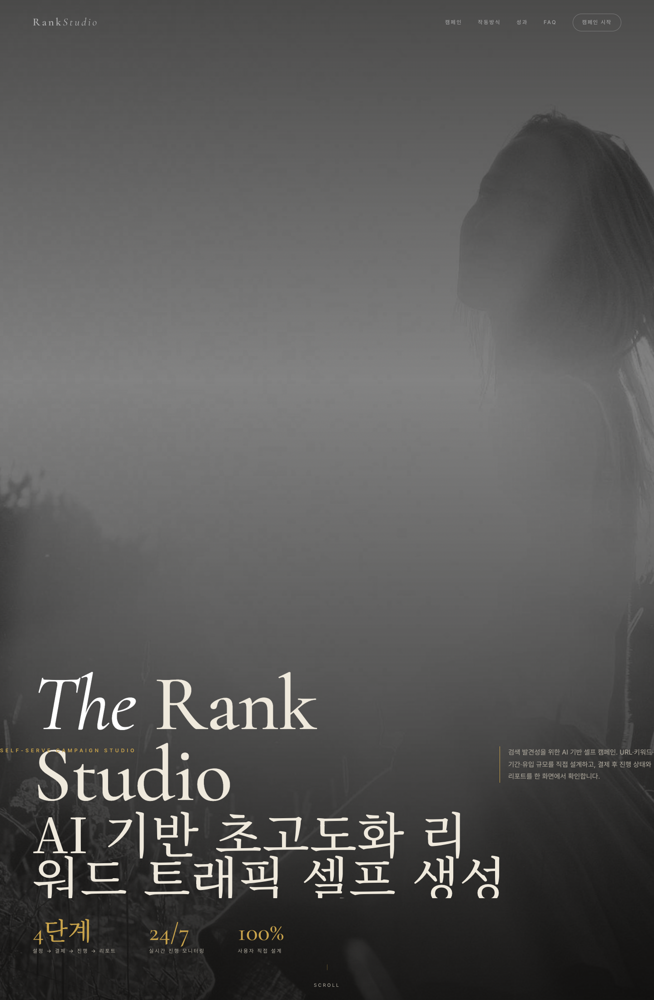
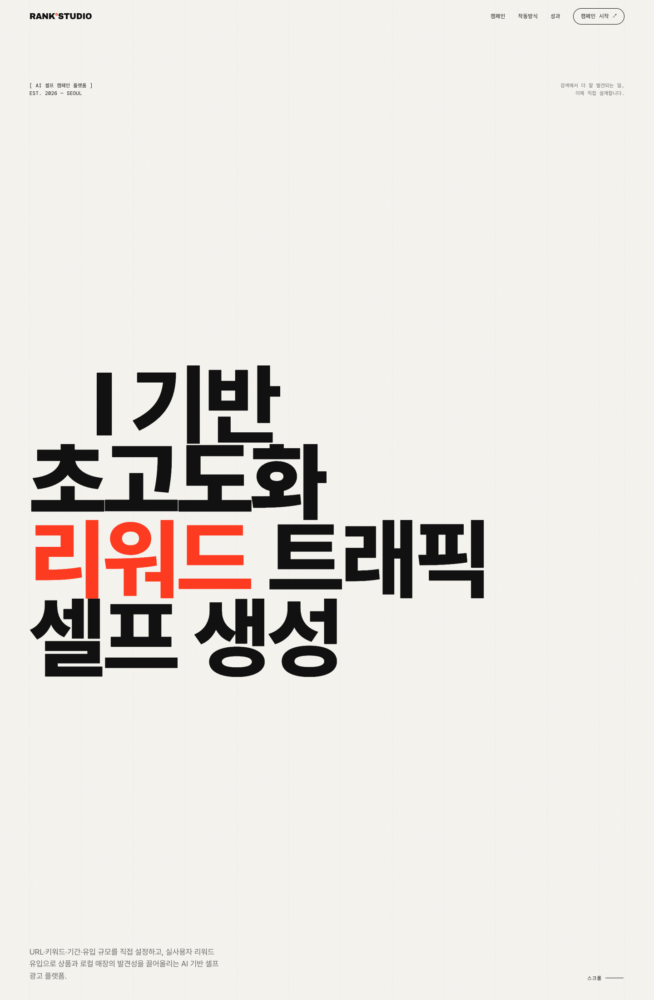
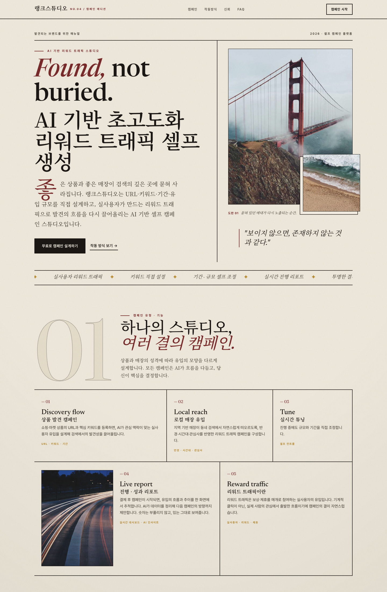
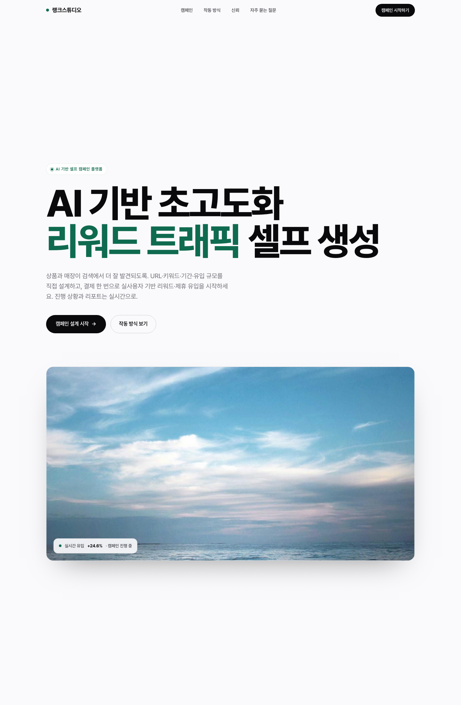
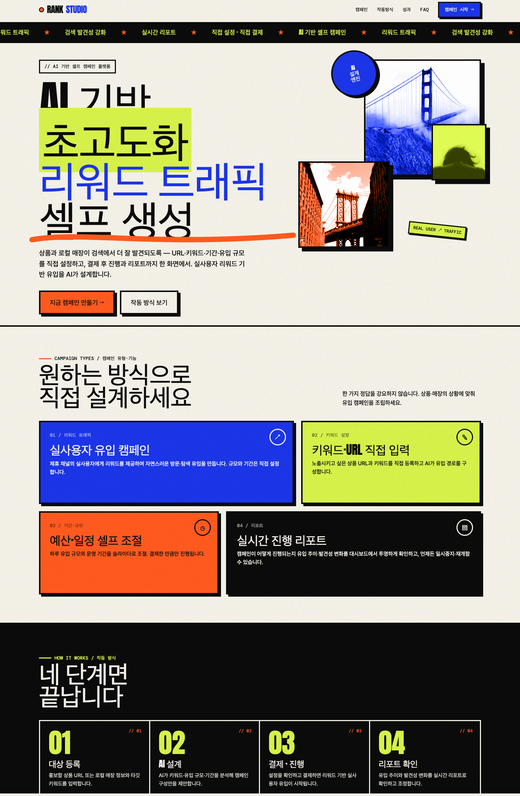
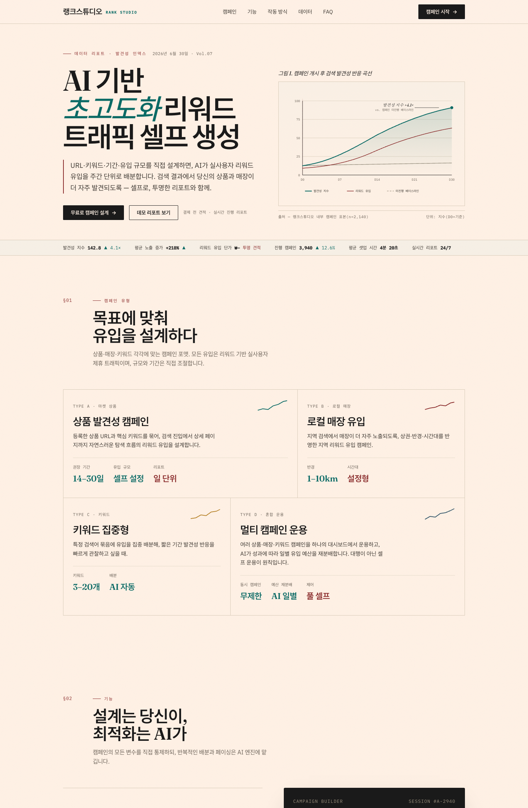
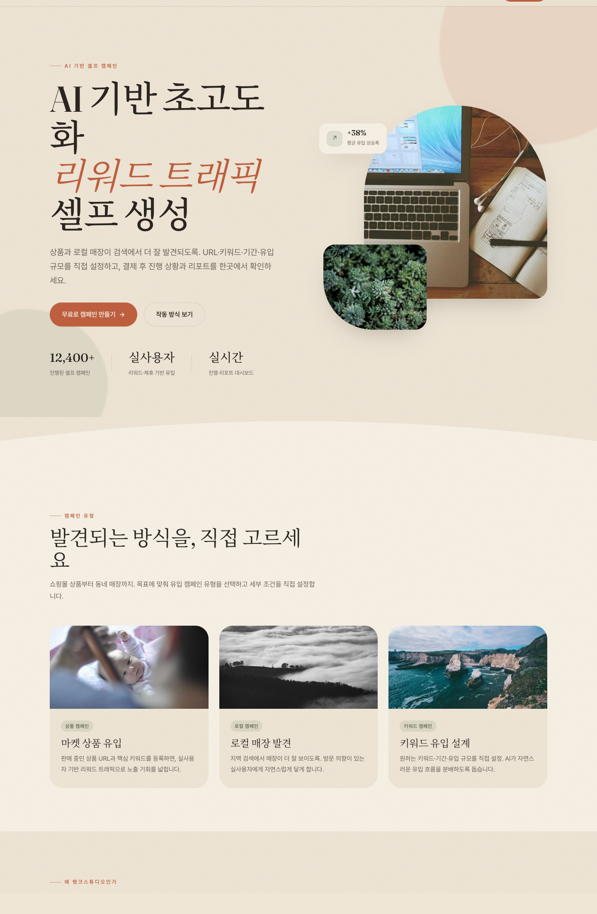
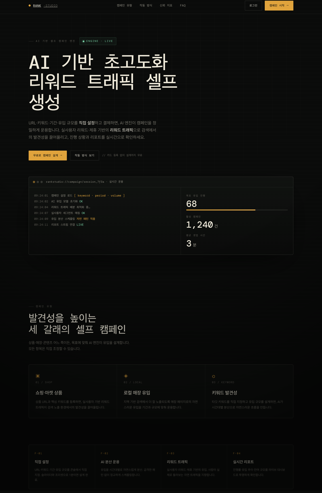
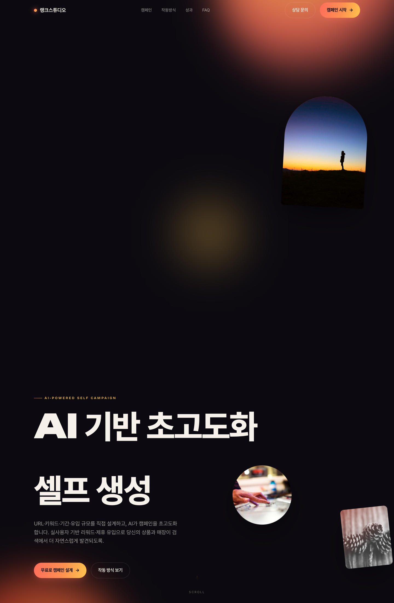

2026 어워드급 기법(실사 이미지·그레인 텍스처·GSAP/Lenis 스크롤 모션·SplitType 키네틱·Three.js 셰이더·커스텀 커서)을 적용해 10개의 서로 다른 아트 디렉션으로 제작했습니다. 카드를 열면 실제 모션·호버·반응형이 그대로 동작합니다. (일부 모션은 스크롤해야 나타납니다.) 마음에 드는 방향 또는 섞을 요소를 알려주시면 실제 앱에 정식 이식합니다.








